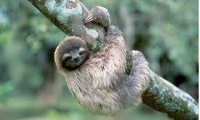
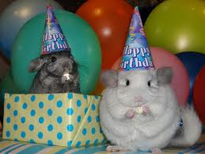
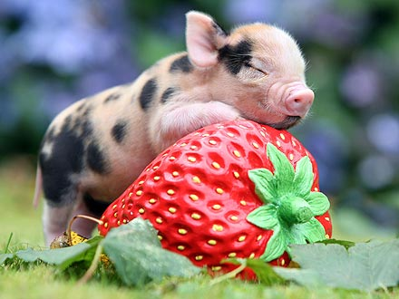
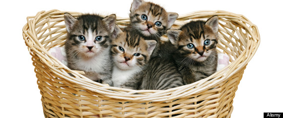

Sloths
Chinchillas
Teacup Pigs



Sloths are an underrated species. Their adorable smile and long arms and legs allow them to pose for pictures as irresistable as this one.
While chinchillas are technically rodents, their mousy features are infinitely more adorable than the mice you may find running around your crumb-infested common room.
Teacup pigs, otherwise known as "miniature pigs," have a history as unusual pets and medical research subjects. They are surprisingly smart and adorably small.
Looking At Cute Animal Pictures Can Make You More Productive, Study Claims

You're welcome for the productivity!
Posted on: January 1, 1974
Read more about this study by Japanese researcher Hiroshi Nittono for Hiroshima University here!